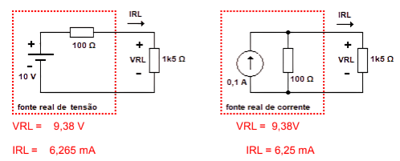

Podemos representar um mesmo circuito de duas formas: como fonte real de tensão ou como fonte real de corrente. Ambas podem fornecer o mesmo efeito sobre a carga, isto é, a mesma tensão e a mesma corrente.
Ao calcularmos a corrente e a queda de tensão na carga (RL), observamos que os resultados são os mesmos, independentemente do tipo de fonte utilizada.
Por exemplo, para RL = 1,5 kΩ:
VRL = 9,38 V IRL = 6,25 mA
Alterando o valor da carga para 220 Ω e repetindo os cálculos, os resultados continuam equivalentes. Portanto, para a carga, não há diferença entre usar uma fonte real de tensão ou uma fonte real de corrente — o efeito é o mesmo.
A resistência interna (ri) representa as perdas internas de energia dentro da fonte, causadas pela limitação dos materiais e dos componentes internos.
Ela não é um resistor físico, mas um modelo que explica a queda de tensão (ou corrente) que ocorre dentro da própria fonte quando ela fornece energia para um circuito.
Em uma fonte real de tensão, ri fica em série com a fonte ideal. Já em uma fonte real de corrente, ri fica em paralelo com a fonte ideal.
Essa resistência interna influencia o comportamento do circuito: quanto maior for ri, menor será a eficiência da fonte.
Para que duas fontes reais sejam equivalentes, devem satisfazer as seguintes condições:
1 – Ambas devem possuir a mesma resistência interna (ri).
2 – Devem obedecer à Lei de Ohm:
Vg = Ig × ri
Ig = Vg / ri
Exemplo:
ri = 100 Ω em ambas as fontes.
Vg = Ig × ri = 0,1 × 100 = 10 V
Ig = Vg / ri = 10 / 100 = 0,1 A